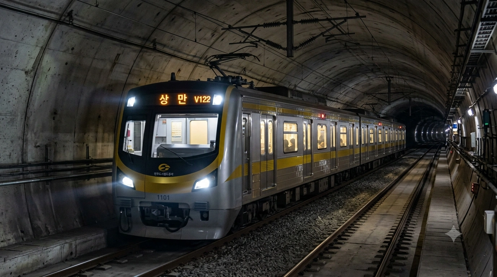
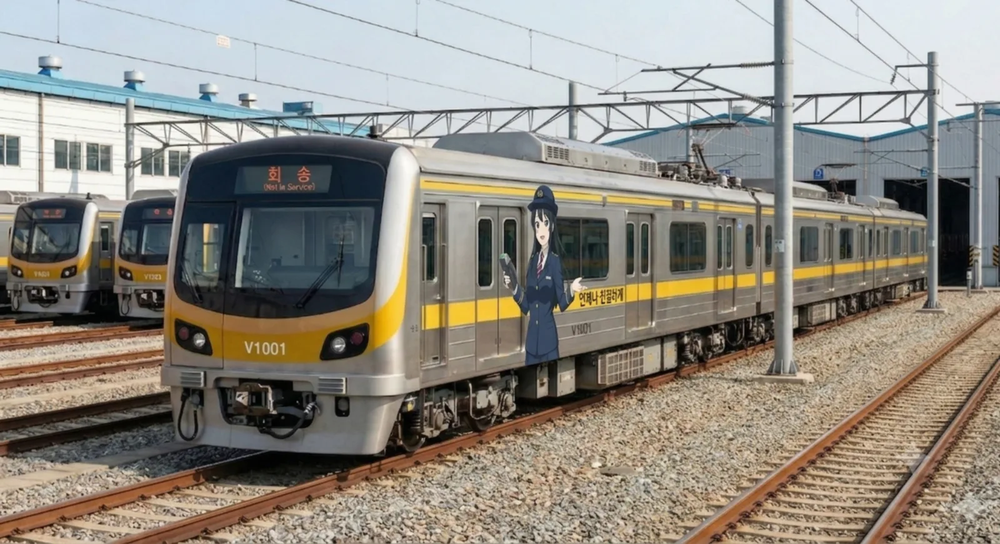
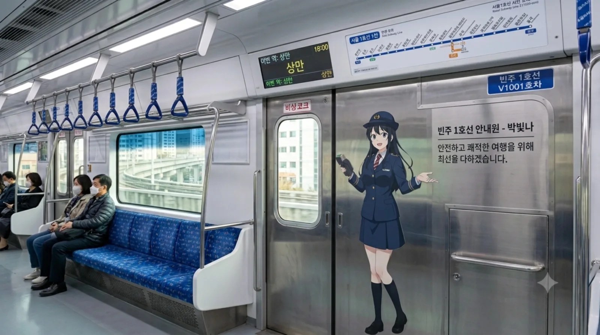
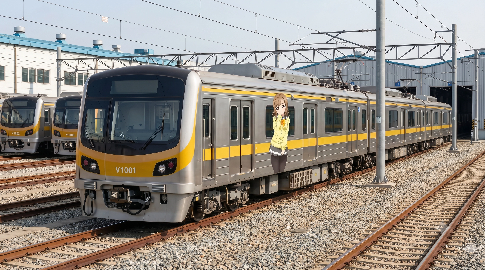
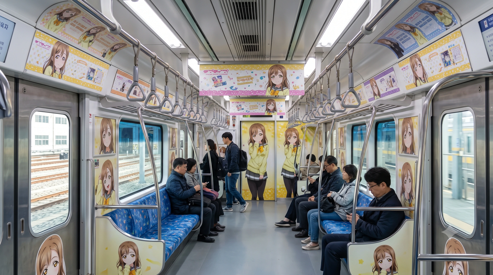

1. 개요
"빈주의 찬란한 시작, 황금빛 1호선"
빈주도시철도공사가 빈주 도시철도 1호선에서 운용 중인 통근형 전동차이다. 차호 앞에 붙은 'V'는 Vehicle 혹은 빈주(Vinju/Binju)의 이니셜로 추정된다. (효빈광역시와 빈주시를 잇는 빈효선 광역전철이 'B' 기호를 선점하여 알파벳 중복을 막기 위함이라는 공식 해명도 있다.)
빈주시는 빈성구(전통 구도심), 가원구(도청 행정타운), 장기구(초대형 신도시 및 학원가)로 나뉘어 있어, 출퇴근 시간만 되면 빈주대로가 거대한 주차장으로 변모하는 헬게이트가 일상이었다. 이 파편화된 3개 구를 동서로 일직선으로 뚫어버리는 대동맥 역할을 위해 빈주 1호선이 탄생했다. 노선 상징색인 황금색(#CFBA0F) 띠를 두르고 있어 멀리서도 눈에 띄며, 훗날 동네방네 '하나마루색' 혹은 '즈라선'이라고 더 많이 불리게 된다.
2. 특징
- 중형 중전철: 일반적인 대형 전동차보다 폭이 약간 좁은 중형 중전철 규격(전폭 2,750mm)을 채택했다. 이는 빈주시의 터널 규격과 승강장 설계를 반영한 것이다.
- 4량 1편성: 빈주시의 도시 규모와 수요를 고려하여 4량 1편성으로 제작되었다. 승강장은 향후 6량 증결을 대비해 여유 있게 지어졌으나, 현재는 4량으로 운행 중이다.
- 황금색 디자인: 빈주시의 번영을 상징하는 황금색(#CFBA0F)을 메인 컬러로 사용하여 고급스러운 느낌을 준다. 옆 동네 빈주 도시철도 2호선의 보라색 차량과 대비되어 '해와 달(혹은 낮과 밤)' 같은 조화를 이룬다.


3. 도입 역사 및 시운전
2008년 첫 예비타당성 조사에서 수요 부족을 이유로 고배를 마셨으나, 시민들의 거센 분노와 단합으로 타당성 조사 논의가 재점화되었다. 2012년 실시설계를 마치고 첫 삽을 떴으며, 2015년 빈주도시철도공사(BURC) 설립과 함께 V1000호대 전동차 반입 및 시운전이 시작되었다. 마침내 2016년 6월 13일, 빈주 1호선(동원~상만)이 정식 개통되며 빈주 시민들도 에어컨 바람을 맞으며 지하철로 출퇴근하는 시대를 맞이했다. 2019년에는 공식 마스코트 '박빛나'가 런칭되어 차량 내외부에서 맹활약 중이다.
3.1. 1세대 (2015년 도입)
- 차량번호: V1001~V1019 (총 19편성)
- 제작사: 현대로템
- 특징: 2016년 빈주 1호선 본선 개통에 맞춰 도입된 초기 물량이다. 도입 당시 빈주시에 처음 들어오는 지하철 차량이라 시민들의 큰 관심을 받았다. 황금색 도색이 햇빛을 받으면 매우 반짝거린다는 특징이 있다.
4. 배속 및 운용
모든 차량은 동원차량사업소에 배속되어 있다. 1호선 본선의 대부분은 지하 2~3층 심도에 건설되어 있으며 전 구간 완전 밀폐형 스크린도어가 설치되어 있다. 단, 기점인 동원역은 채광이 잘 드는 지상 역사를 채택했다.
- 동원차량사업소 위치: 빈주시 동원동
- 특징: 2015년 차량 반입과 시운전을 위해 1호선 개통보다 1년 먼저 가동을 시작한 빈주 1호선의 심장이다.
- 운용 실태: KTX가 정차하는 부동의 승하차 1위 '빈주역'과, 대치동급 거대 학원가가 몰려있는 2위 '장기역'을 중심으로 출퇴근 시간마다 엄청난 헬게이트가 열린다. 상권과 행정타운이 묘하게 얽힌 덕분에 노선은 일직선이지만 행정구역(구)을 3번이나 지그재그로 넘나드는 기묘한 선형을 가지고 있다.
5. 향후 계획
기점인 동원역에서 북쪽으로 방향을 틀어 기존 노후화된 일반철도인 덕빈선의 선로를 개량하여 오택읍 방면(오택중앙역)까지 연장하는 사업이 활발히 추진 중이다. 또한 동습역에서 남쪽으로 분기하여 주전동 방면으로 빠져나가는 '동습지선'도 장기 계획으로 잡혀 있으나 예산 문제로 기약은 없다.
6. 여담 및 사건사고


6.1. 계란 투척으로 지어올린 기적의 철도
2010년 타당성 조사 논의 당시, 한 지역구 국회의원이 공청회 단상에 올라가 "80만 촌구석에 무슨 지하철이냐, 그 막대한 빚을 우짤라고! 그 돈으로 내 공약인 마을 안길 도로 포장이나 하고 시내버스나 몇 대 늘려라!"라는 희대의 망언을 시전한 사건이 있었다. 매일 아침 빈주대로의 헬게이트 출퇴근 정체에 시달리며 피눈물을 흘리던 빈주시민들의 억눌린 분노는 이 망언을 기점으로 완벽하게 폭발하고 말았다. 그 직후 격노한 시민들이 단상으로 몰려들어 해당 의원을 향해 날계란 30여 개와 밀가루를 융단폭격하는 초유의 사태가 벌어졌다. 이 사건 이후 해당 의원은 여론의 집중 포화와 뭇매를 맞고 차기 선거에서 처참하게 낙선하여 정치 생명이 완전히 끝장나버렸다. 반면 1호선 사업은 이 시민들의 거센 분노를 동력 삼아 '시민들의 분노어린 계란으로 지어올린 철도'라는 비범한 칭호를 얻으며 기적적으로 타당성 조사를 통과했다. 계란 투척 버프 덕분에 2012년 첫 삽을 뜰 수 있었으니, 빈주 1호선의 진정한 착공 기념일은 계란이 날아간 그날이라고 보아도 무방할 정도다.
6.2. 만능 짬처리 마스터 박빛나 주임과 단말기 퀵드로우
옆동네 효빈교통공사가 노선별로 마스코트를 펑펑 찍어내며 화려하게 분업(?)을 할 때, 지독한 짠돌이 빈주도시철도공사는 인건비를 아끼고자 이 '박빛나' 단 한 명에게 빈주 1호선, 2호선, 심지어 코레일 관할인 광역전철 민원 홍보까지 모조리 독박을 씌우는 만행을 저질렀다. 그 탓에 공식 일러스트를 확대해 보면 눈가에 짙은 다크서클이 확연하게 그려져 있는 등 'K-직장인'의 애환이 철철 넘쳐 흐른다. 오죽하면 네티즌들이 기가 막히게 합성한 "제발 퇴근시켜줘..." 짤방은 원본보다 더 대박이 나서 전국 직장인들의 심금을 울리며 각종 커뮤니티를 휩쓸었다. 참고로 출퇴근 시간 헬게이트인 빈주역이나 장기역에서 개찰구에 교통카드가 안 찍혀 썽을 내는 진상 승객이 등장하면, 빛나 주임이 0.5초 만에 허리춤에서 이동식 정산 단말기를 뽑아들고 스윽 다가가 "태그 되셨습니다. 다음 분~"을 외치는 일명 '단말기 퀵드로우(건카타)'의 달인이라는 공식 설정까지 붙어 있다. 이쯤 되면 고용노동부에 부당노동행위로 고발해야 하는 것 아니냐는 농담이 철덕들 사이에서 진지하게 오가고 있다. (다행히 2026년 4월, 맑은 눈의 광인을 장착한 신입 김소빈이 참전하면서 2호선 업무는 겨우 넘겨주게 되었다고 한다.)
6.3. 절대 피할 수 없는 '빛나의 저주'
빈주시 정가와 철덕들 사이에서는 이른바 '빛나의 저주'라는 섬뜩한 밈이 거의 정설로 굳어져 내려오고 있다. 그 시작은 앞서 언급된 2010년대 1호선 건설을 결사 반대하며 계란 세례를 맞은 국회의원부터였다. 이후 지방선거 때 "시민 혈세로 근본 없는 만화 캐릭터나 핥고 있는 공기업 사장을 갈아치우겠다!"고 망언을 한 보수 정치인들까지, 박빛나 혹은 1호선에 딴지를 건 인물들은 예외 없이 모조리 다음 선거에서 처참한 득표율로 낙선하며 쓸려나가는 기현상이 벌어졌다. 상황이 이렇다 보니 '빛나 주임을 건드리면 3대가 멸한다'는 흉흉한 소문이 지역구 국회의원들 사이에서 돌기 시작했다. 현재 빈주시 정치인들은 선거철만 되면 귀신같이 빈주역 대합실에 세워진 박빛나 등신대 앞에 다가가 공손히 90도 폴더 인사를 하고, 심지어 출근길 인사용 인증샷까지 찍고 간다는 전설이 있다. 캐릭터를 무시하던 권력자들이 한낱 2D 마스코트 앞에 굽신거리는 꼴은 빈주 1호선이 가진 대중교통의 압도적 권력을 상징하는 블랙 코미디 그 자체다.


6.4. "미라이즈라!!" 하나마루선(즈라선) 밈의 폭발적 반응
1000호대 전동차의 노선 상징색인 황금색(#CFBA0F)이 하필이면 뱅드림도 아닌 애니메이션 《러브라이브! 선샤인!!》의 등장인물 '쿠니키다 하나마루'의 퍼스널 컬러와 소름이 돋을 정도로 완벽하게 일치하는 바람에 대형 밈이 탄생했다. 이 때문에 철덕들과 러브라이버들 사이에서는 이 노선을 1호선 대신 아예 '하나마루선', '즈라선' 등으로 친근하게 부르는 것이 국룰이 되었다. 일부 오타쿠들은 이 노선을 타면 왠지 시즈오카산 놋포빵을 씹어 먹어야 할 것만 같다며 빵을 들고 탑승 인증샷을 올리기도 한다. 심지어 이런 밈이 온라인에서 걷잡을 수 없이 퍼지다 못해, 1호선 전담인 박빛나 주임이 양손으로 동그라미를 그리며 말끝마다 "~즈라"를 붙이는 고퀄리티 2차 창작 팬아트까지 쏟아져 나오는 지경에 이르렀다. 눈치 빠른 빈주도시철도공사 SNS 담당자도 이 폭발적인 반응을 아는지, 아주 가끔 공식 계정 게시물에 은근슬쩍 노란색 동그라미 빵 이모티콘을 남발하며 팬들의 심장을 저격하고 있다. 급기야 진짜 하나마루 특별 래핑 열차까지 전격 운행을 시작하며 빈주 1호선은 덕후들의 완벽한 성지로 거듭났다.
6.5. 기상나팔 BGM과 뜬금없는 일본어 방송 버그
1000호대의 차내 안내방송과 승강장 진입 방송은 빈주도시철도공사의 영원한 노예 마스코트인 박빛나(CV. 김하영)의 낭랑한 음성으로 송출된다. 평상시에는 꾀꼬리 같은 상냥하고 밝은 하이톤을 유지하지만, 퇴근 시간대(오후 6시~8시) 한정으로 송출되는 하차 및 안전 주의 캠페인 방송에서는 왠지 모르게 영혼이 실시간으로 깎여나가는 듯한 처절한 K-직장인의 피로한 목소리가 미세하게 섞여 들린다는 소름 돋는 괴담이 있다. 종착역인 상만역과 동원역에 다다를 때 나오는 종착 BGM인 '황금빛 노을'은 굉장히 웅장하고 희망찬 관현악곡인데, 음량이 너무 커서 야근에 찌들어 기절해있던 직장인들을 강제로 후들겨 깨워버리는 기상나팔 역할을 톡톡히 하고 있다. 가장 골때리는 해프닝은, 가끔 열차 내부 단말기 시스템 오류가 나면 한국어가 아닌 일본어판 성우(사쿠라 아야네)의 "마모나쿠, 슈텐..." 이라는 방송이 뜬금없이 튀어나오는 버그가 간헐적으로 발생한다는 것이다. 이때마다 열차 안에서 졸고 있던 철덕들과 서브컬쳐 팬들이 화들짝 놀라 주위를 두리번거리는 진풍경이 펼쳐지곤 한다.
6.6. 장기역(長崎) '뱅드림 혐성 드립'의 성지화
장기구 4동 한가운데 위치한 거대 환승역인 장기역(長崎)의 한자 표기가, 우연히도 인기 밴드 애니메이션 《뱅드림! It's MyGO!!!!!》의 베이시스트 '나가사키 소요(長崎そよ)'의 성씨와 완벽하게 똑같다는 사실이 발견되며 인터넷을 뜨겁게 달궜다. 이를 빌미로 물 들어올 때 노 젓는 데 도가 튼 빈주도시철도공사에서 실제로 소요와 공식 콜라보레이션을 진행해버리는 초유의 사태가 발생했다. 그 바람에 평범한 학원가였던 장기역 복합환승센터 일대는 전국에서 몰려든 오타쿠들의 필수 성지순례 명소로 180도 변해버렸다. 특히 퇴근 시간 헬게이트로 변한 장기역 주변 교차로에 갇혀 오도 가도 못하는 운전자들의 입에서는 절로 "난데 하루히코가...(왜 춘일이가...)" 같은 소요의 찰진 혐성 대사가 터져나온다고 전해지며, 장기역을 지나가는 1000호대 안에서는 소요의 표정을 따라하는 승객들을 심심찮게 볼 수 있다.
6.7. 출퇴근 산소 부족과 지옥의 에어컨 온도 전쟁
1000호대의 쾌적한 하드웨어 시설과 별개로 열차 내부 환경은 출퇴근 시간 한정으로 매일 지옥도가 펼쳐진다. 압도적 승하차 1위 환승역인 빈주역에서는 KTX나 일반 철도에서 쏟아져 내린 양손 가득 캐리어 부대들이 우르르 들이닥치며 1000호대의 좁은 4량 통로를 꽉 틀어막는다. 여기에 엎친 데 덮친 격으로 장기역~시능역 구간은 장기구의 어마어마한 대치동급 학원가(장기4동)로 향하는 중고등학생 떼와, 시능동 산업단지로 향하는 좀비 같은 직장인들이 완벽하게 겹쳐 탑승한다. 수백 명의 숨결이 섞이며 차량 내 산소 부족을 호소할 지경에 이르자, 객실 양 끝에서는 에어컨이 약하다는 더위 민원과 너무 춥다는 냉방병 민원이 동시에 폭주하기 시작했다. 매일 아침 기관사실의 온도 조절판 버튼을 수십 번씩 눌렀다 떼야 하는 1호선 기관사들은 엄청난 스트레스로 멘탈이 나가며 집단 탈모를 호소 중이라고 한다.
6.8. 구를 세 번이나 넘나드는 행정구역 지그재그 미스터리
노선의 선형 자체는 전반적으로 반듯한 일직선 형태의 동서 방향을 향하고 있으나, 상권 중심인 빈성구와 도청이 있는 가원구의 행정 경계가 워낙 기괴하게 얽혀 있어 행정구역 상으로는 세 개의 구를 지그재그로 어지럽게 넘나드는 코미디를 연출한다. 신흥 신도시인 장기구를 관통하다가 사증역에서 갑자기 구도심 빈성구로 진입하고, 서원동1가역에서 행정타운 가원구의 꼬리 부분을 슬쩍 긁고 지나가더니, 여연역에서 귀신같이 다시 빈성구로 튀어나온다. 그러다 중은역에서 또 가원구를 밟고 관동4가역에서 다시 빈성구 핵심 상권을 훑은 뒤 상만역(가원구)에서 끝이 난다. 처음 빈주 1호선을 타본 외지인들은 스마트폰 지도를 보며 "분명 터널 따라 직진만 했는데 구가 세 번이나 바뀌었다"며 황당함을 금치 못하곤 한다. 이쯤 되면 차량을 모는 기관사들조차 내가 지금 어느 구를 달리고 있는지 헷갈린다는 농담이 나올 지경이다.
7. 관련 문서
- 빈주도시철도공사
- 빈주 도시철도 1호선
- 동원차량사업소
- 빈주도시철도공사 2000호대 전동차
2호선(보라색) 동생 - 박빛나 --단말기 건카타 마스터--
- 쿠니키다 하나마루 --1호선의 진정한 지배자--
- 나가사키 소요 --장기역의 수호신--